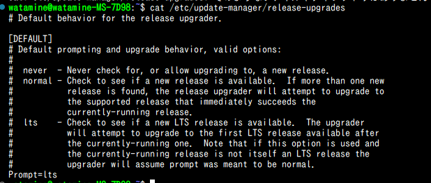

Ubuntuを22.04から24.04にアップデートする
以下のコマンドを実行する
まず、パッケージの管理、アップデートを行う
sudo apt update # パッケージ情報を取得
sudo apt dist-upgrade # パッケージを更新
sudo apt autoremove # 不要パッケージを削除
更新の準備をする
sudo apt install update-manager
cat /etc/update-manager/release-upgrades

Ununtuアップグレードの設定を確認した。
Prompt=ltsとは、UbuntuのLTS版からLTSへのアップグレードを行うということ。
LTSとは通常版よりもサポート期間が長い安定バージョンのことで、22.04や24,04がそれにあたる
sudo do-release-upgrade
アップグレーを実行するコマンド。
y/NやEnterの入力を求められるので、実行して待つだけ。
1時間以上かかった。